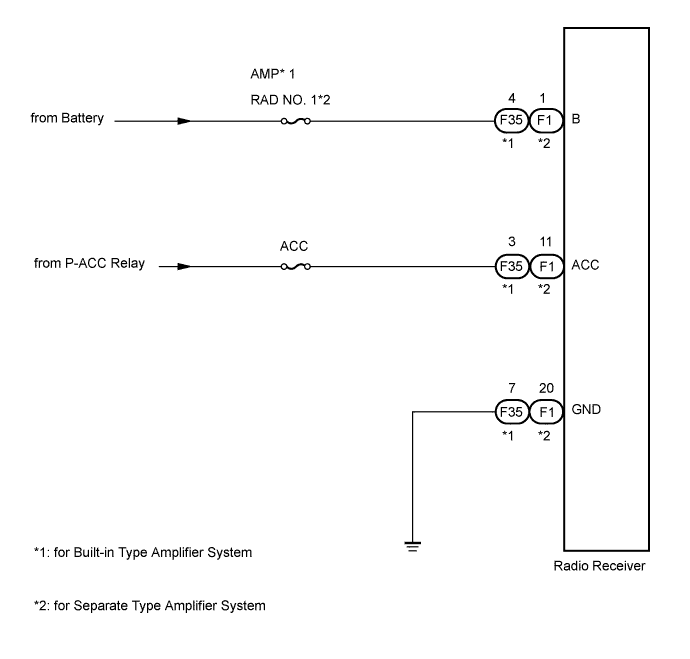
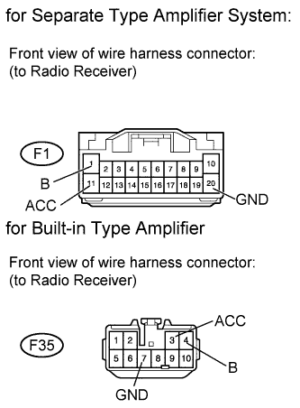

AUDIO AND VISUAL SYSTEM (w/o Multi-display) > Radio Receiver Power Source Circuit |

| 1.INSPECT FUSE (RAD NO. 1, ACC, AMP) |
Disconnect the RAD NO. 1 and AMP fuses from the engine room relay block.
Disconnect the ACC fuse from the main body ECU.
Measure the resistance according to the value(s) in the table below.
| Tester Connection | Condition | Specified Condition |
| RADIO NO. 1 fuse | Always | Below 1 Ω |
| ACC fuse | Always | Below 1 Ω |
| AMP fuse | Always | Below 1 Ω |
|
| ||||
| OK | |
| 2.CHECK HARNESS AND CONNECTOR (RADIO RECEIVER - BATTERY AND BODY GROUND) |
 |
Disconnect the F35*1 and F1*2 receiver connectors.
Measure the resistance according to the value(s) in the table below.
| Tester Connection | Condition | Specified Condition |
| F35-7 (GND) - Body ground | Always | Below 1 Ω |
| Tester Connection | Condition | Specified Condition |
| F1-20 (GND) - Body ground | Always | Below 1 Ω |
Measure the voltage according to the value(s) in the table below.
| Tester Connection | Condition | Specified Condition |
| F35-4 (B) - Body ground | Always | 11 to 14 V |
| F35-3 (ACC) - Body ground | Engine switch on (ACC) |
| Tester Connection | Condition | Specified Condition |
| F1-1 (B) - Body ground | Always | 11 to 14 V |
| F1-11 (ACC) - Body ground | Engine switch on (ACC) |
|
| ||||
| OK | ||
| ||